誰在偷看我的電子信箱？

「我的線上電子信箱帳號被盜了」
「我懷疑有人偷看我的信件」
或許在你看本篇文章的同時，「有人」正在看你的電子信件。
多數人不太了解信箱被入侵的嚴重性。不管是駭客或「熟客」，一旦進入你的線上電子信箱時，就像小偷侵入住宅一樣，會蒐集任何感興趣的資料，諸如網路銀行、線上購物、相簿或部落格的帳號與密碼等。若你將以上相關敏感資訊都放在電子信箱上，那麼在被侵入的同時，所有相關網站的個人資料也將一併洩漏。更糟的是，很多人都習慣使用一樣的密碼，只要知道你有使用哪些線上服務，就可以「一碼通用」。所以，只要其中一個帳號與密碼被盜用，其它申請的服務也將面臨相同的危險性。
網路上有很多文章教人怎麼申請免費、空間超大的線上電子信箱，但對於如何抓出背後偷看信件的盜取者之方法著墨並不多，而且流傳的解決方法裡，很多都是錯誤的。例如目前流通最廣的是，
"""
到「通訊錄」中按新增聯絡人，在名稱的地方輸入「0」，信箱網址的地方空白不要填，按「完成」，如此一來，通訊錄裡輸入「0」的這一筆，會成為通訊錄第一個聯絡資料，萬一病毒入侵要盜取通訊錄名單，第一個連絡者就寄不出去，垃圾郵件就會被擋下。
"""
另外還有，
"""
可以從信件是否有被讀取的情形來判斷有無被盜用。只要有不曾讀取過的信件突然變成已閱讀就是被盜用了。
"""
可惜的是這兩個方法都不管用。第一個流言沒辦法完全阻止信件盜發；而第二個流言則因線上電子信箱現在都有「將信件標示為未讀取」的功能，如 Yahoo!奇摩電子信箱與 Gmail，這使得盜取者讀取完後可以恢復成未讀取的狀況，以掩飾他的蹤跡。
難道就沒有好的解決方法了嗎？其實有的，在接下來的文章裡，將以簡單的步驟教你如何盡可能地抓出背後的盜取者。
===== 申請網路追蹤器 =====
顧名思義，追蹤器就像一個釣餌，目的是讓背後的盜取者上勾，並加以蒐證並分析。
網路上可以達到類似的服務有很多，在這裡我將介紹 OneStat 公司提出的免費服務，並以 Yahoo!奇摩電子信箱的操作為例。若你不是使用 Yahoo!奇摩電子信箱也沒關係，這個方法適用所有線上電子信箱，如 Gmail 或 Hotmail 亦可，步驟些許不同，只要稍微調整也可以達到相同的目的。
首先至 OneStatFree(註1)首頁點選「Sign-up Now」。
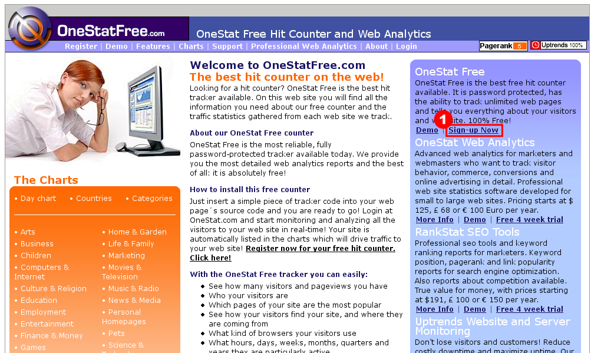
填寫註冊帳號的資訊，
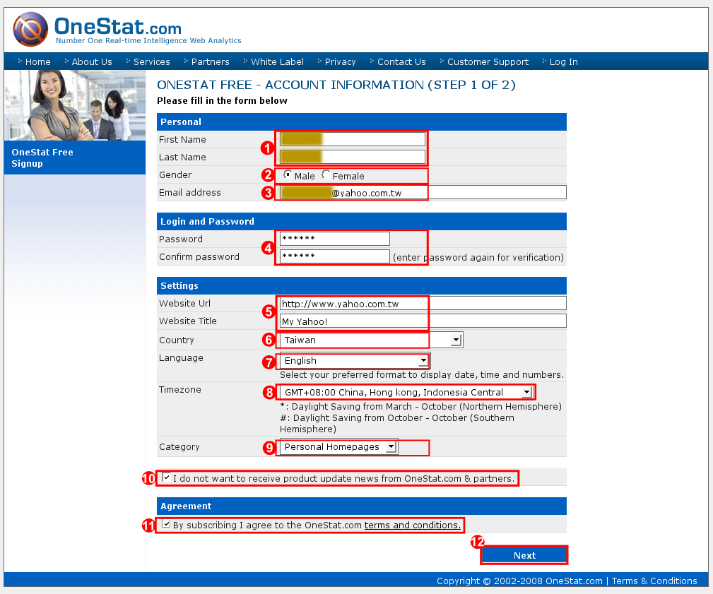
分別填寫欄位：
(1) 填寫註冊的姓名；
(2) 性別；
(3) 電子信箱：電子信箱請務必填寫真實的信箱位址，否則會收不到追蹤器；
(4) 密碼：填入申請 OneStatFree 帳號之密碼；
(5) 網址：可自由填寫，如信箱是 Yahoo!奇摩，則可填入 https://www.yahoo.com.tw；
(6) 國籍；
(7) 語系：請選擇 English，若選擇繁體中文則部分內容會顯示亂碼，這是 OneStatFree 的編碼問題；
(8) 時區：請選擇台灣時區 GMT+08:00；
(9) 類別：請選擇適合自己的類別；
(10) 是否願意收到 OneStatFree 新的產品資訊；
(11) 是否接受 OneStatFree 的條款：請選擇接受(打勾)。
最後按下步驟 (12) 的 Next。
接下來會顯示註冊的資訊，
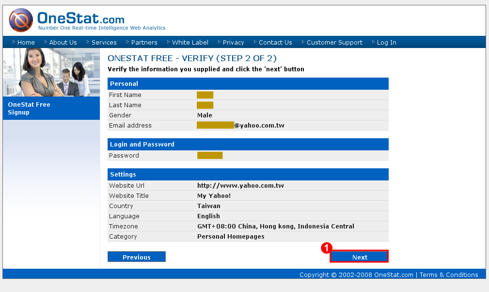
確認無誤後，請按下 Next。
最後顯示註冊的 ID，是一串數字。
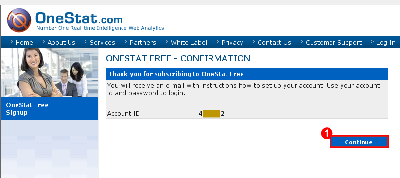
並按下 Continue，即完成註冊。
===== 收取追蹤器 =====
接著到你的線上電子信箱收取 OneStat.com 寄來的追蹤器。
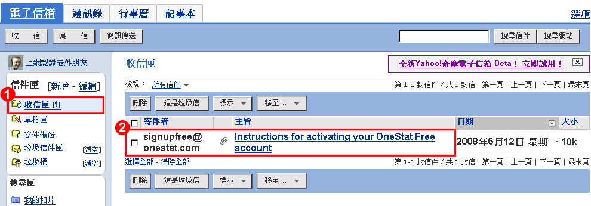
可以在收信匣中看到 OneStat.com 寄來的新信件。
此信件的夾帶檔案即是追蹤器。開啟此信件後，將夾帶檔案下載回自己的電腦上。
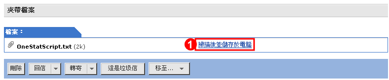
最後確定下載。
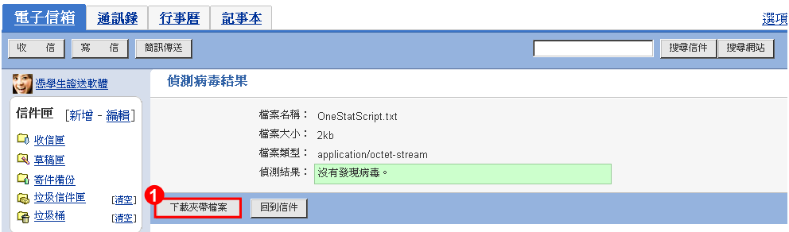
===== 偽裝追蹤器 =====
我們必須偽裝追蹤器，讓背後的盜取者更容易開啟此追蹤器而上勾。例如可以將追蹤器改名為「某某公司的商業機密」或「某某線上購物的帳號密碼」等。在此例中，將偽裝成某銀行的密碼。
首先將之前下載回來的追蹤器，
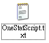
改名為「password.doc」。因為追蹤器是用標準的 HTTP 協定，所以只要有支援 HTTP 協定的格式皆可使用，如改成 html(HTML格式) 或 doc(Microsoft Word 格式)。
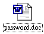
然後再以電子信箱寄偽裝的追蹤器給自己，引誘盜用你帳號的人開啟。
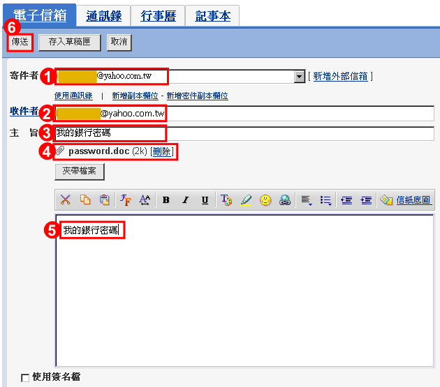
(1)(2)：線上電子信箱。
(2)：聳動的主旨。
(3)：夾帶檔案為之前偽裝的「password.doc」。
(4)：聳動的內容。
(5)：傳送。
===== 確認追蹤器安置完成 =====
登錄你的線上電子信箱，以確認有收到偽裝的追蹤器。
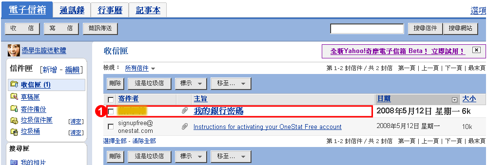
最後記下 OneStatFree 的帳號與密碼，帳號是一連串的數字，若忘記的話可以從原本 OneStat.com 寄來的信件中找到。在確認 OneStatFree 的帳號與密碼無誤後，把原本 OneStat.com 寄來的信件刪除，以避免洩漏曾經申請追蹤器的紀錄，並再次確認從垃圾桶中也清除該信件。
===== 隨時監控 =====
接下來登錄 OneStatFree(註1) 的網站，
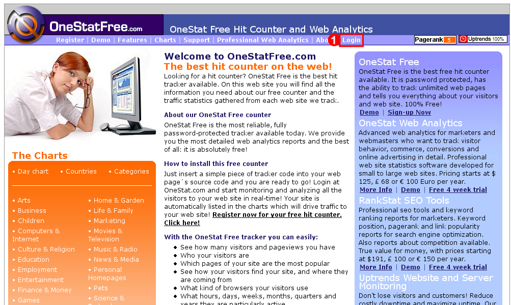
我們可以看到追蹤器的統計圖(1)與數據(2)。
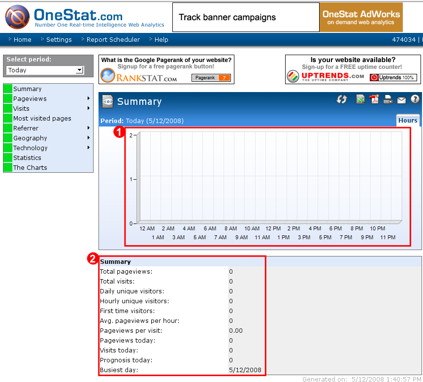
它紀錄開啟追蹤器的次數，在此例表示開啟「password.doc」的次數。
如果顯示如下，即表示有開啟的紀錄，
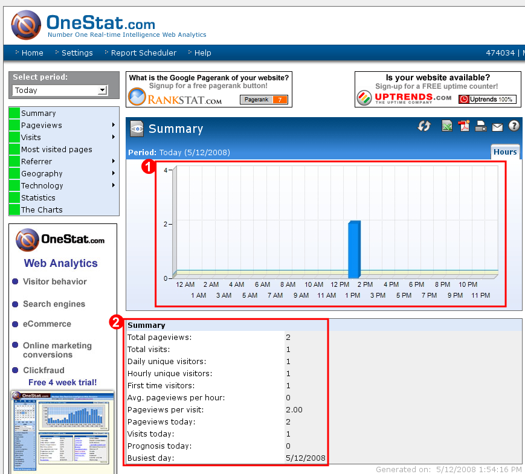
所以只要確認當次當時不是自己開啟的，則可以確定是"某人"開啟了追蹤器，這也顯示你的線上電子信箱已被盜取。此時，我們可以查看追蹤器的追蹤紀錄。
點選左邊欄位的「Visits」→「Last Visitors」。
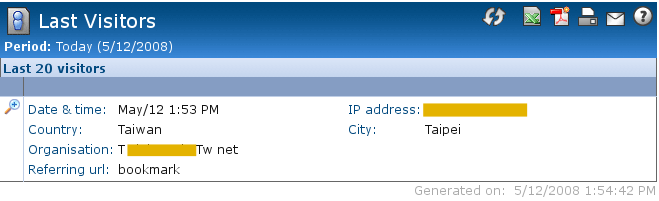
會顯示盜取者開啟追蹤器的時間，以及他的電腦IP與來源國家等資料。
===== 結語 =====
有人問我是否有「軟體」的解決方法，例如只要安裝軟體，而不用按照這麼多繁瑣的申請步驟。
想像一下，如果只要點兩下安裝軟體，除了可以簡化申請步驟外，還可以達到即時回報的功能，如此就不需要隨時到追蹤網站上盯著最新紀錄，軟體會自動會彈出視窗通知我。這多麼方便阿。
其實「軟體」的解決方法是可行的，但是背後需要與這些服務合作才能符合需求。目前自由軟體並沒有類似搭配的方案，這是比較可惜的。若讀者對此有任何想法或建議，歡迎與自由軟體鑄造場聯絡(註2)。
註1：https://www.onestatfree.com/
註2：自由軟體鑄造場電子信箱